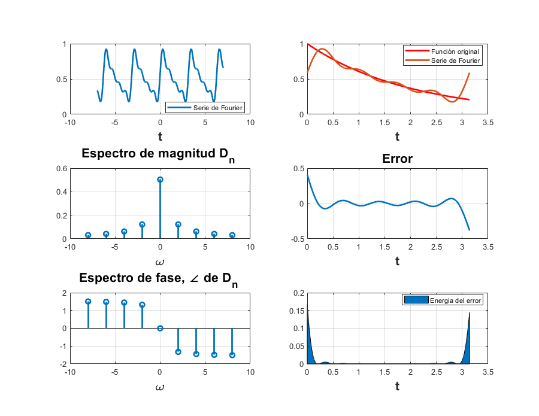
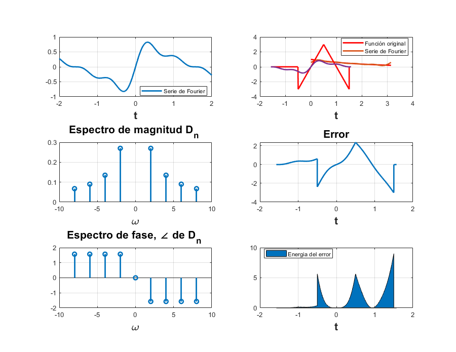
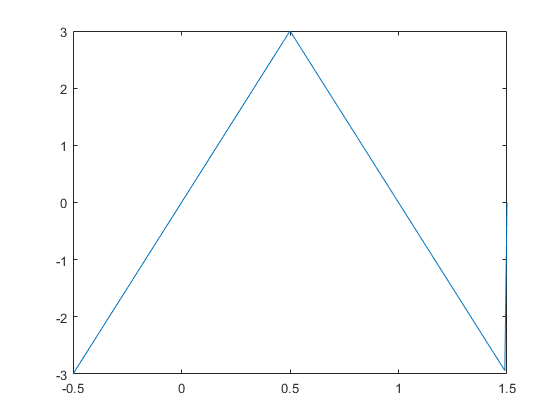
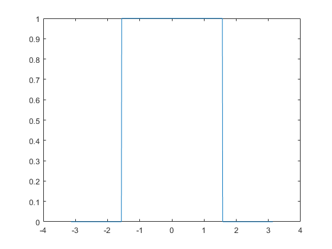

PRACTICA 5
Contents
INTEGRANTES
- Chavez Andrade Luis Daniel
OBJETIVOS
*Realizar gráficas de series de Fourier exponenciales y trigonométricas en tiempo continuo *Manipulación de instrucciones en MATLAB *Calculo númerico de los coeficientes de Fourier
ENTREGABLES
#Para cada problema debes de realizar
#Realizar el programa de la serie que se indica #Gráfica de la serie de Fourier en un intervalo que muestre 5 repeticiones #Gráfica de la señal y la serie de Fourier para 4 armonicos #Gráfica del error #Gráfica de la energía del error #Espectro de magnitud para 4 armonicos #Espectro de fase para 4 armonicos #Todo lo anterior para 15 armonicos
EJERCICIO6.1
d0=0.504; dn=@(n) 0.504/(1+4*n*j); t0=0; tf=pi; f=@(t) exp(-t/2); armo=4; a=-7; b=7; sfc(t0,tf,dn,d0,f,armo,a,b) % t0 el valor inicial para calcular la serie % tf el valor final donde calcular la serie % dn función de la fórmula de los dn % f función original % armo número de armonicos a utilizar en la gráfica| % a, b intevalo para realizar la grafica de la serie
EJERICIO 6.2
d0=0; dn=@(n) 0.27/(n*j); t0=(-pi/2); tf=(pi/2); armo=4; a=-2; b=2; f=@(t) ((6*t).*((t>=-0.5)&(t<0.5)))+(6*(1-t).*((t>=0.5)&(t<1.5))); t=-0.5:.01:1.5; sfc(t0,tf,dn,d0,f,armo,a,b) figure plot(t,f(t)) 
EJERCICIO 6.4
d0=0; dn=@(n) (0.732/(n*j)); t0=-pi; tf=pi; armo=5; a=-pi; b=pi; f=@(t) ((1).*((t>=-pi/2)&(t<(pi/2)))); t=-pi:.01:pi; sfc(t0,tf,dn,d0,f,armo,a,b) figure plot(t,f(t))
EJERCICIO6.5
EJERCICIO6.7
d0=0; dn=@(n) (1/3); t0=0; tf=3; f=@(t) (1); armo=4; a=-5; b=5;
%%sfc(t0,tf,dn,d0,f,armo,a,b)